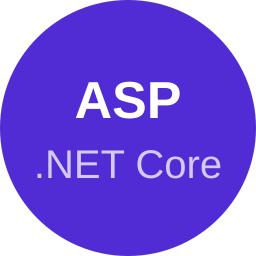
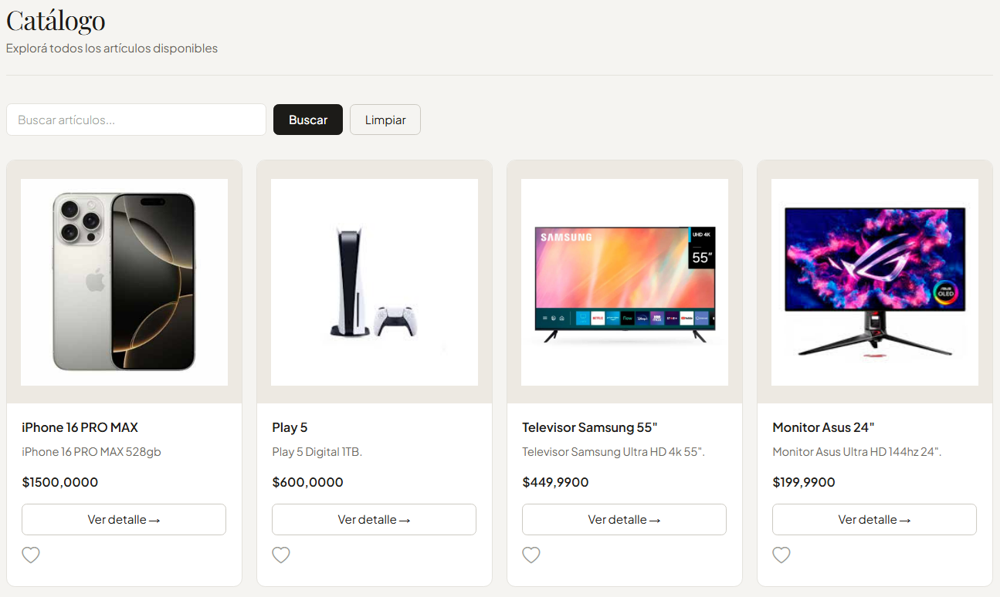

C#
Desarrollador Back End
Estudiante de programación en Universidad Tecnológica Nacional con conocimientos en C#, Java, SQL y desarrollo web.
Interesado en desarrollarme profesionalmente en el área de software, aportando capacidad de aprendizaje, resolución de problemas y trabajo en equipo.
Universidad Tecnológica Nacional - Tecnicatura en Programación | 2024 - Actualidad
MaxiPrograma – Especialización en Desarrollo C# y .NET | 2024 - Actualidad
Academia de Inglés | 2024 - Actualidad
Educación Secundaria Completa | 2018 - 2023
Lenguajes y herramientas con las que trabajo habitualmente:
C#
.NET

ASP.NET Core

SQL Server
Aplicación de consola desarrollada en C# utilizando POO.

Aplicación de escritorio en C# con .NET y conexión a base de datos SQL Server.

Aplicación web de catálogo desarrollada con ASP.NET Core y SQL Server.

Comunicate conmigo si estás interesado en mis servicios como programador.